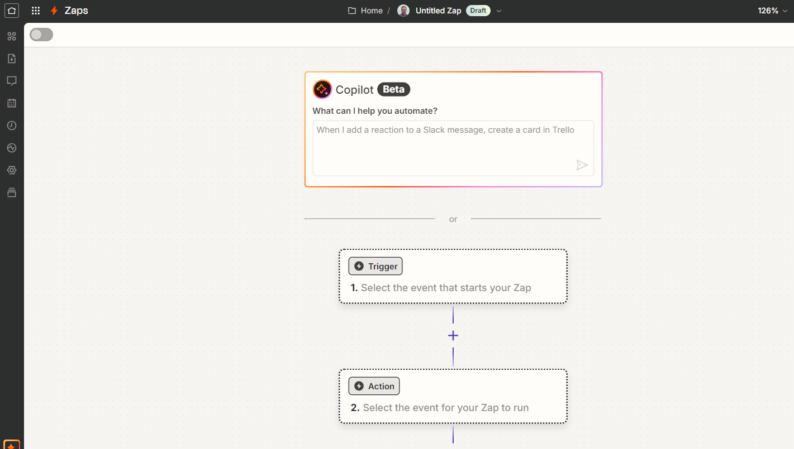
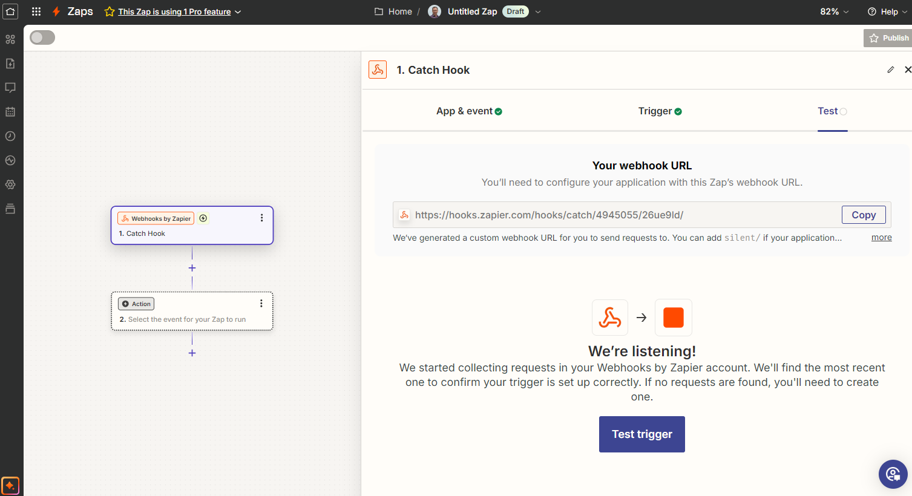
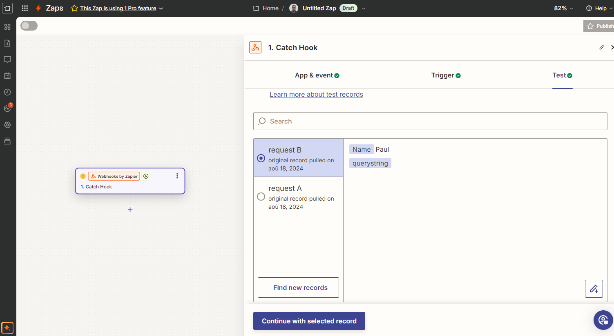

Zapier
Zapier is an online automation tool that connects your applications and services to automate repetitive tasks without the need for coding.
Available from the Enterprise plan.
It works by linking two or more applications to create automations, called Zaps, which trigger an action in one application when something happens in another.
Zyllio offers a native integration with Zapier that allows:
- Triggering Zaps from Zyllio (via Webhook),
- Updating Zyllio data from Zapier Zaps.
Prerequisites
A valid Zapier account is required to connect the Zapier and Zyllio solutions.
Additionally, a subscription to the Zyllio Enterprise plan is needed to activate this feature.
Configuration
The Zapier integration can be activated from the Settings tab / Integration / Zapier by enabling the Enable button as shown in this image.

Zapier Webhook
Creating the Zapier Scenario
Once connected to Zapier, click on New Zap to create a Zap.

Then, select Webhooks by Zapier.

Select the Event: Catch Hook and click on Continue.

Click Continue again.

The Webhook step is now created. This screen allows you to copy the URL of your Webhook by clicking the Copy button.

Creating the Screen
This screen prompts the user for their name to send it to Zapier via the Webhook.
The screen includes:
- A Text input field whose variable is called Your name.
- A button that triggers the Zapier Webhook via an action.
- A LabelText component that displays the response from the Webhook stored in the variable Result.

Creating the Action
Select the button, then click on its Action property. Drag and drop the Zapier Webhook action and configure the action as follows:
- Set the Variable property to Result.
- Set the Webhook URL property to the URL of your Webhook copied from your Zap.
- The Request data contains a data item called name that refers to the variable Your name.
Thus, the Zapier Webhook will receive the parameter of the user's name entered in the Zyllio screen.

Then click on the Zapier! button to trigger your Webhook.
Testing the Webhook
Return to the Zap, click on the Test tab, and then click on the Test trigger button.
Then select Continue with selected record, which should display the parameters sent by the Zyllio screen: Name: Paul.

The Zap is now connected to Zyllio, and additional steps can be added (Mail, Notion, Slack, etc.).